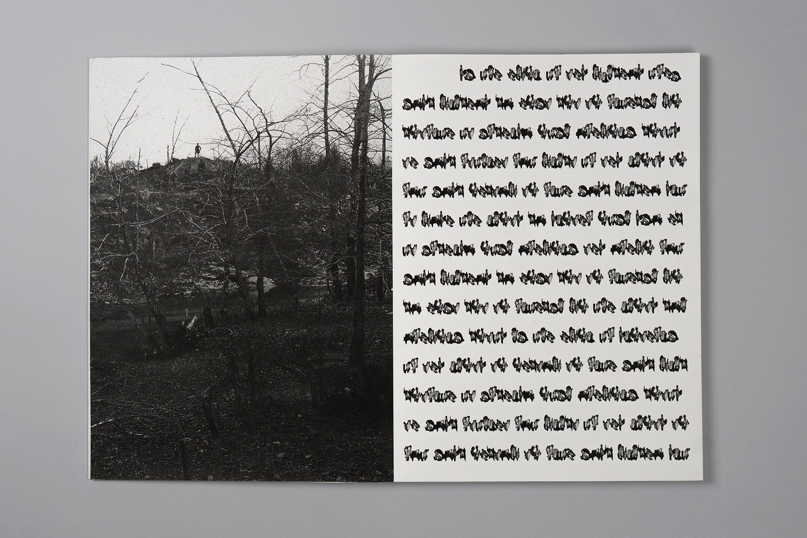
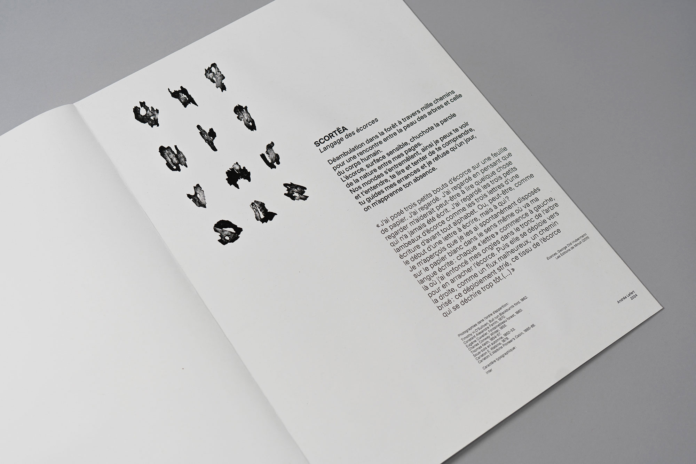
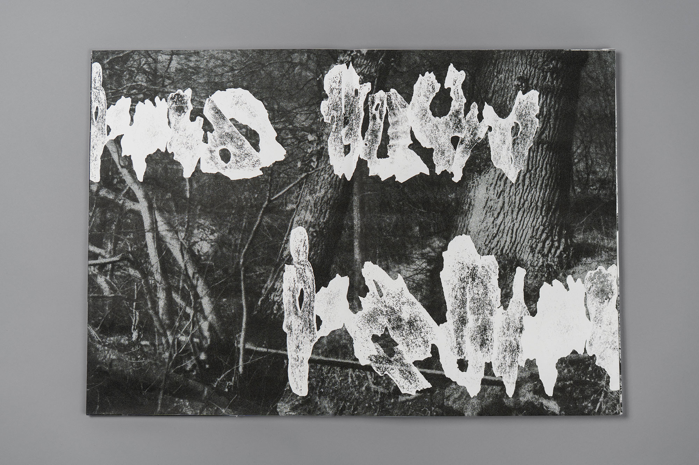
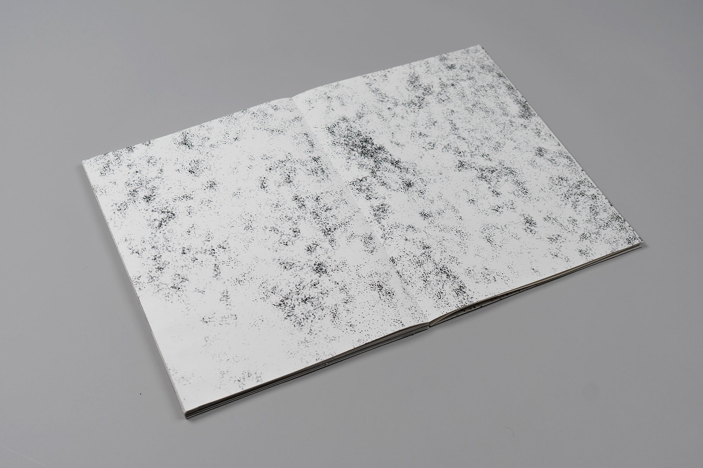
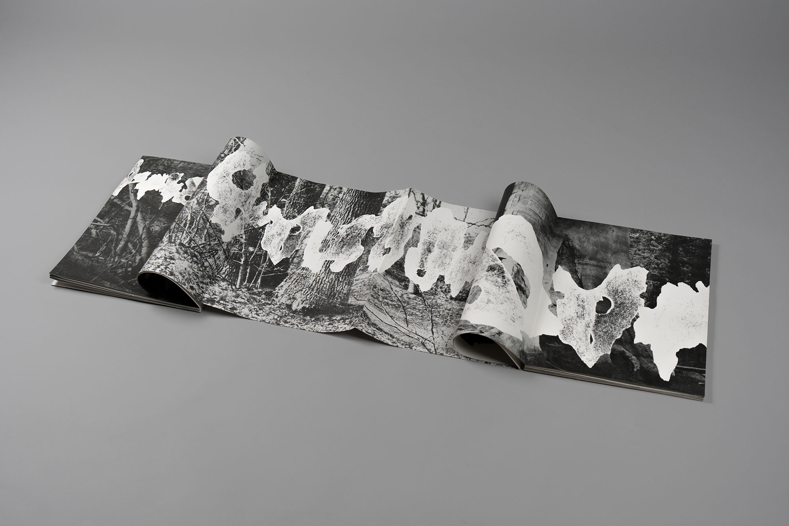
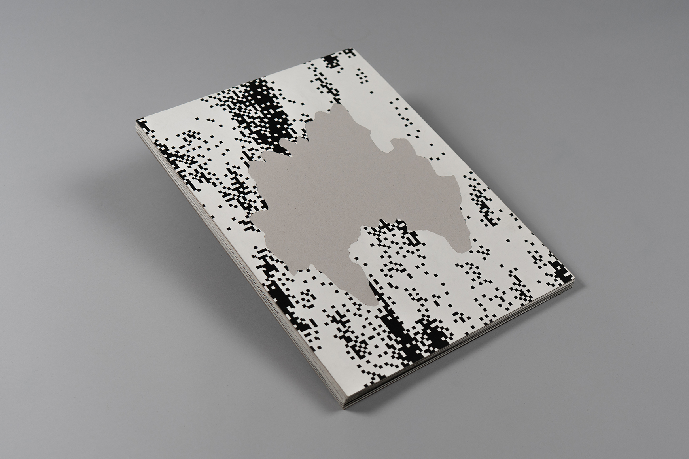

2024
La nature est éloquente, elle parle. Il s'agit d'explorer un détail de la nature préalablement récolté
et de repérer des potentiels glyphes afin de donner à voir
les écrits de la nature. L'écorce déploie son langage et se fait porte-voix
de la forêt qu'elle habite. Cette écriture visible mais illisible nous invite
à une promenade,
à la fin de laquelle les écorces qui composent mes signes retrouvent leur matière originelle.
Format: 43x31cm





